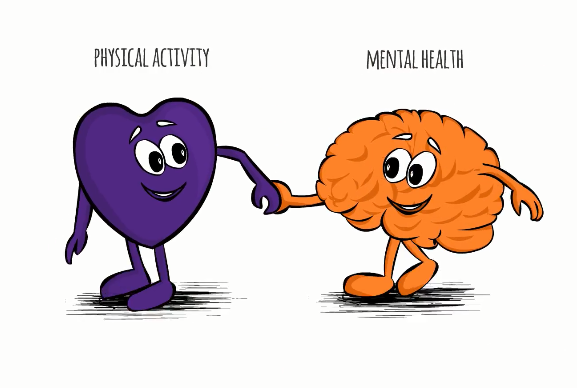
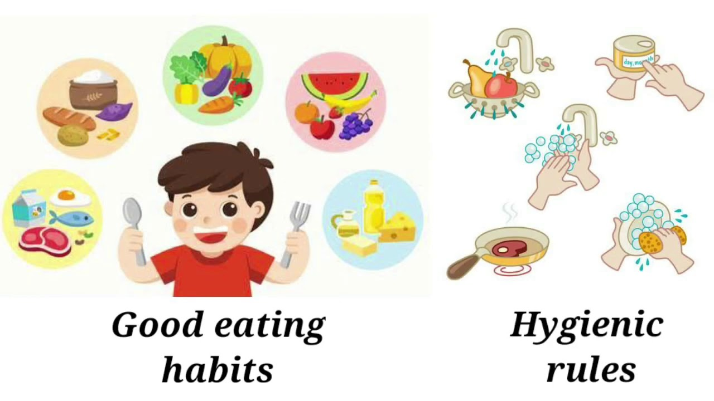

"DREAMS DON'T WORK UNLESS YOU DO"
Title description, May 2, 1999
Exercise & Fitness
Exercising regularly, every day if possible, is the single most important thing you can do for your health. In the short term, exercise helps to control appetite, boost mood, and improve sleep. In the long term, it reduces the risk of heart disease, stroke, diabetes, dementia, depression, and many cancers.
For adults of all ages
At least 150 minutes of moderate aerobic exercise like brisk walking or 75 minutes of rigorous exercise like running (or an equivalent mix of both) every week. It’s fine to break up exercise into smaller sessions as long as each one lasts at least 10 minutes. Strength-training that works all major muscle groups—legs, hips, back, abdomen, chest, shoulders, and arms—at least two days a week. Strength training may involve lifting weights, using resistance bands, or exercises like push-ups and sit-ups, in which your body weight furnishes the resistance.For pregnant women
The guidelines for aerobic exercise are considered safe for most pregnant women. The CDC makes no recommendation for strength training. It’s a good idea to review your exercise plan with your doctor.For children
At least 60 minutes of physical activity a day, most of which should be devoted to aerobic exercise. Children should do vigorous exercise and strength training, such as push-ups or gymnastics, on at least three days every week."Healthy Food Habits"
Title description, May 2, 1999

FOOD HABITS..
Eating a healthy diet is not about strict limitations, staying unrealistically thin, or depriving yourself of the foods you love. Rather, it’s about feeling great, having more energy, improving your health, and boosting your mood.
Healthy eating doesn’t have to be overly complicated. If you feel overwhelmed by all the conflicting nutrition and diet advice out there, you’re not alone. It seems that for every expert who tells you a certain food is good for you, you’ll find another saying exactly the opposite. The truth is that while some specific foods or nutrients have been shown to have a beneficial effect on mood, it’s your overall dietary pattern that is most important. The cornerstone of a healthy diet should be to replace processed food with real food whenever possible. Eating food that is as close as possible to the way nature made it can make a huge difference to the way you think, look, and feel.
By using these simple tips, you can cut through the confusion and learn how to create—and stick to—a tasty, varied, and nutritious diet that is as good for your mind as it is for your body.